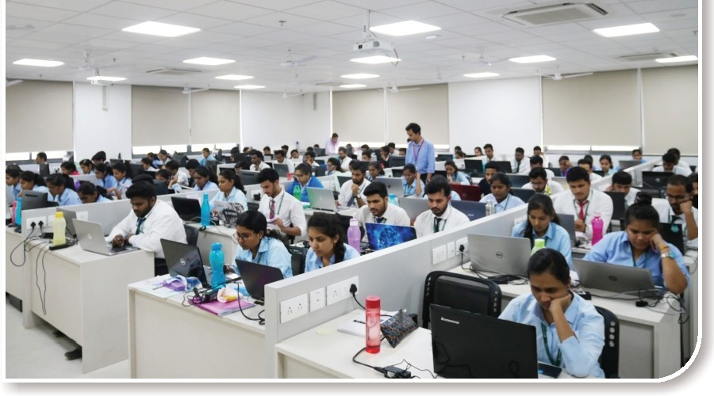

SunBeam Institute of Information Technology, Hinjawadi, Pune


SunBeam IT Park, Hinjawadi campus is located in Phase 2 area of Rajiv Gandhi IT Park Hinjawadi. It isjust
opposite to Infosys- Phase 2 campus. The institute isspread across a campus of 70,000 sq ft.
The campus houses aworld class academic and computing infrastructure. The campus consists of
state-of-the-art classrooms each equipped with ergonomic seating arrangements, air conditioning, LCD
projection system, public address system and soothing interiors conducive to learning.
The computing infrastructure consists of state-of-the-art labs designed with utmost care to enable students
to spend prolonged hours in their practicals. Computer Labs have been designed to enable classroom approach
making concurrent conduct of lectures and practicals (Online Training) possible.
The campus also houses a well equipped library, reading rooms, the administrative blocks, server rooms, staff
rooms, canteen etc. The institute has tie-ups with private third party hostels in the close vicinity which
provide student accommodation on sharing basis.
SunBeam Institute of Information Technology,Karad


SunBeam Karad is most conveniently located just opposite the Karad Bus Stand & 4 km from the Karad Railway
Station. Karad is located on the Mumbai-Bangalore NH-4 & only 5 hours from Mumbai, 3 hours from Pune & 1
hour from Kolhapur. The institute is spread across a campus of 12,000 sq ft covering the institute and the
on campus hostels & mess.
The campus houses aworld class academic and computing infrastructure. The campus houses two state-of-the-art
classrooms each equipped with ergonomic seating arrangements, air conditioning, LCD projection system,
public address system and soothing interiors conducive to learning.
The computing infrastructure is spread across four state-of-the-art labs designed with utmost care to enable
students to spend prolonged hours in their practicals. Three of the four labs have been designed to enable
classroom approach making concurrent conduct of lecture and practicals (online training) possible.
The campus also houses the on-campus hostelwhich isfully furnished and an on-campus mess which makes SunBeam
Karad a truly residential & 24 hours institute. The institute also hasawell equipped library,administrative
blocks, server rooms, staff rooms etc.